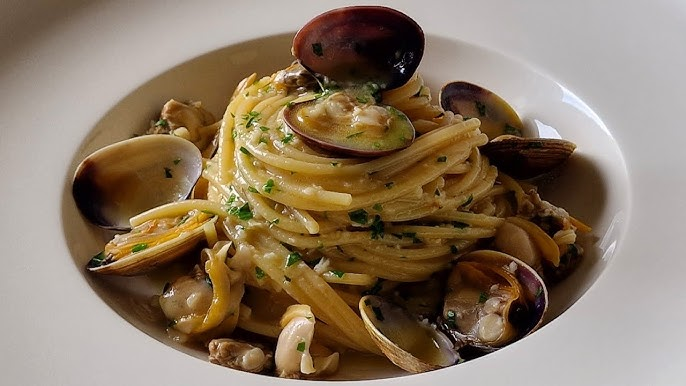

상큼한 레몬 소스로 맛을 낸 포시타노의 시그니처 라비올리.
신선한 문어를 허브와 올리브오일로 구워낸 전통 해산물 요리.

얇고 바삭한 도우에 신선한 토마토와 모짜렐라가 어우러진 정통 피자.

바다의 향이 가득한 조개 파스타로, 현지에서 가장 인기 있는 메뉴.

지중해의 보석이라 불리는 포시타노는 절벽 위에 자리한 이탈리아의 아름다운 해안 마을입니다.
형형색색의 건물과 푸른 바다가 어우러져 낭만적인 풍경을 자아냅니다.
여유로운 거리와 해변에서 이탈리아 특유의 느긋한 정취를 느낄 수 있습니다.
상큼한 레몬 소스로 맛을 낸 포시타노의 시그니처 라비올리.
신선한 문어를 허브와 올리브오일로 구워낸 전통 해산물 요리.
얇고 바삭한 도우에 신선한 토마토와 모짜렐라가 어우러진 정통 피자.
바다의 향이 가득한 조개 파스타로, 현지에서 가장 인기 있는 메뉴.
지중해 바다의 해산물과 포시타노 특산물인 레몬을 이용한 요리
그리고 나폴리 근처에 위치해 피자의 기원인 나폴리의 피자까지 체헙해볼수 있습니다.